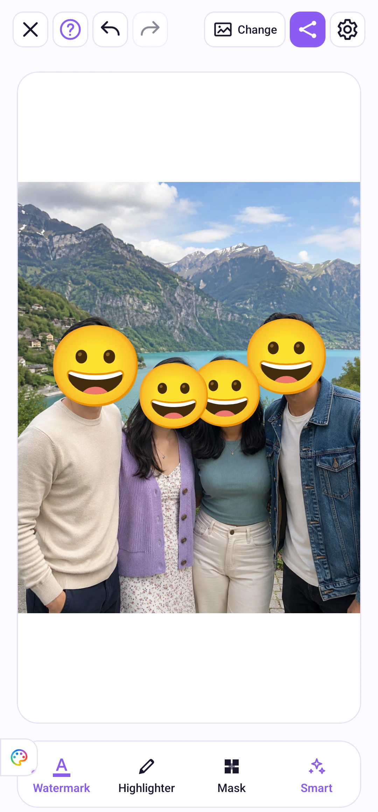

Pag-edit ng larawan
Mga face sticker at text watermark
Takpan ang mukha gamit ang emoji o magdagdag ng paulit-ulit na teksto para sa gamit ng larawan.
Sundan ang mga hakbang
Pumili ng oras para pumunta sa hakbang. Gamitin ang fullscreen para makita ang mga detalye.
Sticker sa mukha
Buksan ang Takpan at i-on ang mga face sticker, saka i-tap ang natukoy na mukha para pumili ng emoji. Ang I-clear ay nag-aalis lang ng sticker sa mukhang iyon. Nalalapat ang switch sa buong grupo ng larawan at naaalala sa susunod na paggamit.
Takpan ang natukoy na mga mukha ng emoji sticker. Pumili ng ibang ekspresyon para sa bawat mukha at panatilihin ang saya ng grupo.


Watermark
Buksan ang Watermark sa toolbar sa ibaba, ilagay ang teksto, saka ito i-on. Ayusin ang hitsura sa preview. Para sa kasalukuyang larawan ang text watermark at kasama ito sa mga kopyang sine-save at ibinabahagi.
Maglagay ng paulit-ulit na teksto para ipakita ang layunin ng larawan. Ayusin ang teksto, kulay, opacity, laki, anggulo at pagitan.